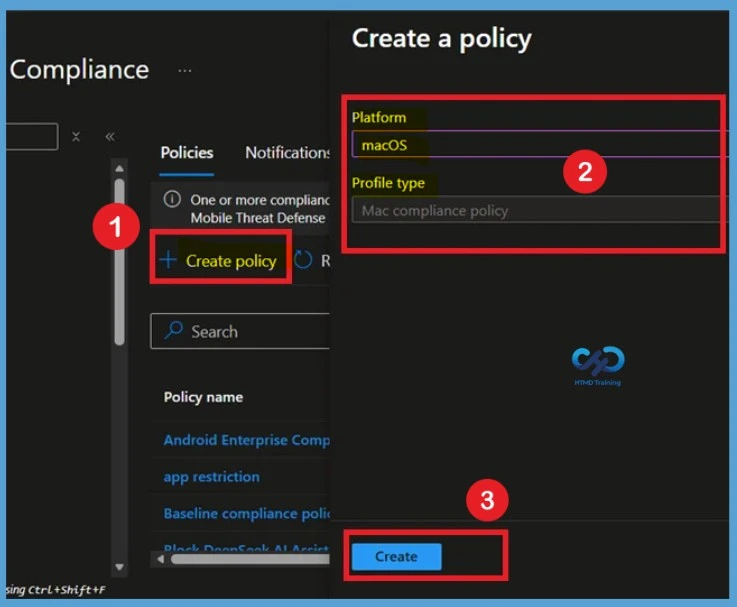
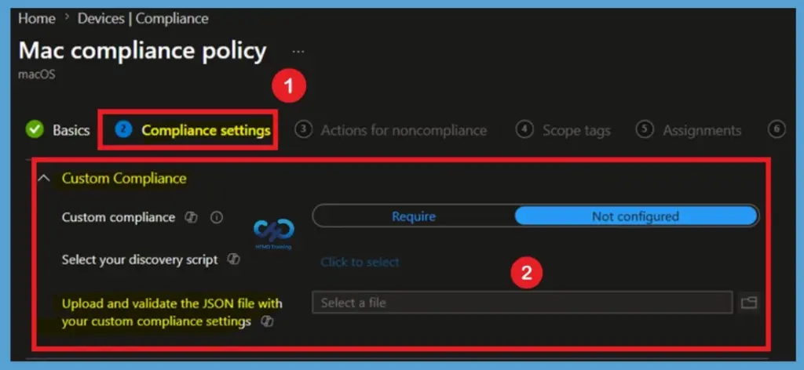

Key Takeaways
- Organizations can create custom compliance requirements that go beyond the built-in macOS compliance settings.
- Discovery scripts and JSON rules can be used to evaluate specific device attributes and conditions.
- Administrators can check installed applications, running processes, app versions, and custom security configurations.
- The feature helps organizations enforce business-specific security and compliance requirements on macOS devices.
In this post we are discussing about Enhance macOS Compliance with Custom Security and Compliance Checks to Improve Device Security using Microsoft Intune. Microsoft has announced the general availability of Custom Compliance Settings for macOS in Microsoft Intune. The feature helps organizations strengthen security controls while supporting many types of macOS management scenarios. However, every organization may have different security, and compliance needs that are not covered by the default compliance settings.
Table of Contents
Enhance macOS Compliance with Custom Security and Compliance Checks to Improve Device Security using Microsoft Intune
Some companies may need to check for specific applications, custom security configurations. To address this, Microsoft Intune allows administrators to use custom compliance checks for macOS devices. By using custom scripts and compliance settings, organizations can evaluate additional requirements.
With custom compliance settings, IT administrators can define their own compliance checks using discovery scripts and JSON-based rules. For create custom compliance policy you have to navigate through Devices > Compliance > +Create Select Platform as macOS and profile type as Mac compliance policy.

What’s New in macOS Custom Compliance Settings
Custom Compliance Settings for macOS are now generally available in Microsoft Intune. Administrators can create organization-specific compliance requirements that go beyond the default compliance settings provided by Apple and Intune. This allows businesses to validate additional security controls and operational standards that are important to their environment.
The feature uses discovery scripts to collect information from managed macOS devices and JSON rules to evaluate the collected data. Based on the defined criteria, Intune determines whether a device is compliant or noncompliant and can enforce Conditional Access policies accordingly.
- Microsoft Intune now supports Custom Compliance Settings for macOS, allowing administrators to upload a discovery script and JSON rules to evaluate device-specific compliance requirements.
- This helps organizations check security settings, applications, and other device conditions that are not covered by built-in compliance policies.
- Intune uses the collected device data to determine compliance status, helping organizations enforce custom security requirements and strengthen compliance management for macOS devices.
| What’s New | Details |
|---|---|
| Custom compliance for macOS | Now generally available; admins can enforce org‑specific requirements beyond Apple’s built‑in settings. |
| Extended coverage | Aligns compliance with Conditional Access |
| Discovery scripts + JSON rules | Inspect attributes Apple doesn’t expose |

More Device Attributes and Conditions
One of the major advantages of custom compliance settings is the ability to inspect a range of device attributes. Administrators can use discovery scripts to gather information that is not available through standard compliance settings.
Reference
What’s new in Microsoft Intune – July
Need Further Assistance or Have Technical Questions?
Join the LinkedIn Page and Telegram group to get the latest step-by-step guides and news updates. Join our Meetup Page to participate in User group meetings. Also, join the WhatsApp Community and the WhatsApp channel to get the latest news on Microsoft Technologies. We are there on Reddit as well.
Author
Anoop C Nair is a Workplace Technology solution architect with 25+ years of experience. Microsoft Certified Trainer. Microsoft MVP from 2015 onwards for consecutive 11+ years! He is a blogger, Speaker, and Founder of HTMD Community and HTMD Conference. His main focus is on Device Management technologies like Intune, Windows, and Cloud PC. He writes about technologies like Intune, SCCM, Windows, Cloud PC, Entra, and Microsoft Security.